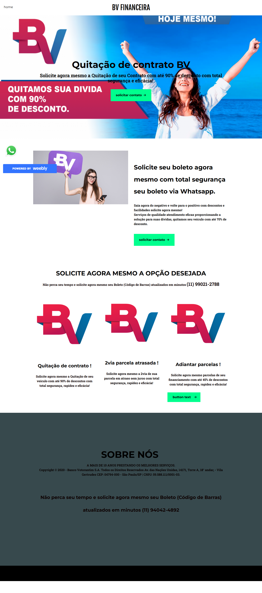

SIMIO · dossiê de candidato · campanha simio-20261119-174043-8bbc · gerado em 2026-11-19T21:22:03+00:00
https://quitacaoonline.weebly.com/
STRONG_INDICATION Prioridade HIGH · Cenário D_STRONG_IMPERSONATION · Revisão humana: PENDING
Este dossiê apresenta indícios para apoio à auditoria. Não constitui conclusão regulatória. As conclusões automatizadas devem ser verificadas contra as evidências brutas abaixo (screenshots, catálogo e arquivos com hash). Conteúdo de terceiros é exibido como texto; links não são clicáveis por segurança.
A página analisada (quitacaoonline.weebly.com) apresenta fortes indícios de impersonação da marca (cenário D_STRONG_IMPERSONATION). Hospedada em plataforma gratuita de criação de sites, ela assume integralmente a identidade 'BV FINANCEIRA' no título e cabeçalho, utiliza de forma ostensiva o logotipo da instituição e reproduz no rodapé a razão social ('Banco Votorantim S.A.'), endereço e CNPJ oficiais do próprio banco (59.588.111/0001-03), sem identificar qualquer terceiro ou correspondente responsável. Além disso, oferta serviços sensíveis típicos de canais oficiais pós-venda (emissão de 2ª via de boleto, adiantamento de parcelas e quitação de financiamento com promessa de até 90% de desconto) direcionando o consumidor para atendimento via números móveis de WhatsApp. [Revisor: CONFIRM] A hipótese do analista é integralmente confirmada pelas evidências. O site, hospedado em plataforma gratuita de terceiros (quitacaoonline.weebly.com), apresenta-se exclusivamente como 'BV FINANCEIRA', exibe repetidamente o logotipo da marca e utiliza indevidamente a razão social ('Banco Votorantim S.A.'), endereço e CNPJ oficiais da instituição no rodapé, sem qualquer menção a correspondente bancário ou empresa terceira. A jornada é focada na captação para serviços sensíveis (emissão de 2ª via de boleto, adiantamento de parcelas e quitação de contrato com promessa de até 90% de desconto) direcionando o usuário para números móveis no WhatsApp, configurando forte indício de uso indevido e impersonação da marca.

| Ref | Tipo | Local | Conteúdo |
|---|---|---|---|
| E-URL | domain | url | URL final: https://quitacaoonline.weebly.com/ (domínio: quitacaoonline.weebly.com) |
| E-DISC-001 | text | search_index | Índice de busca (grounding): weebly.com — **[Weebly - Página "BV FINANCEIRA"](https://vertexaisearch.cloud.google.com/grounding-api-redirect/AUZIYQFODZO1L3A25f3_4O3bEJYyVGPBlYS3zCRf08BYQPeZdJx-IaWKhqZ9PM7lnc7GHaGmiyGjhgSIMZjT-ivrouNL-rFDPd-m3x47zbgI6zT6wDQvjVnvrc-av0Q68Q==)** (`weebly.com`): Hospedada em construtor gratuito, intitula-se diretamente como "BV FINANCEIRA" sem identificar razão social ou CNPJ responsável | Promete quitação de contrato de veículo com até 90% de desconto, adiantamento de parcelas (45% de desconto) e emissão de 2ª via de parcela atrasada sem juros diretamente via WhatsApp |
| E-SHOT-VIEWPORT | screenshot | viewport | evidence\C125bd37587\attempt-1\viewport.png (sha256 f1852a1f9aae89cb…) |
| E-SHOT-FULL | screenshot | page | evidence\C125bd37587\attempt-1\fullpage.png (sha256 76b3f6fc95c93054…) |
| E-TITLE | title | head | BV FINANCEIRA - Home |
| E-META-1 | meta | head | og:site_name: BV FINANCEIRA |
| E-META-2 | meta | head | og:title: BV FINANCEIRA |
| E-META-3 | meta | head | og:description: Saia agora do negativo e volte para o positivo com descontos e facilidades solicite agora mesmo! Serviços de qualidade atendimento eficaz proporcionando a solução para suas dívidas, quitamos seu... |
| E-HEAD-1 | heading | page | Quitação de contrato BV |
| E-HEAD-2 | heading | page | Solicite seu boleto agora mesmo com total segurança seu boleto via Whatsapp. |
| E-HEAD-3 | heading | page | SOLICITE AGORA MESMO A OPÇÃO DESEJADA |
| E-HEAD-4 | heading | page | Quitação de contrato ! |
| E-HEAD-5 | heading | page | 2via parcela atrasada ! |
| E-HEAD-6 | heading | page | Adiantar parcelas ! |
| E-HEAD-7 | heading | page | SOBRE NÓS |
| E-HEAD-8 | heading | page | Não perca seu tempo e solicite agora mesmo seu Boleto (Código de Barras) atualizados em minutos (11) 94042-4892 |
| E-FOLD | text | viewport (acima da dobra) | Home BV FINANCEIRA Quitação de contrato BV Solicite agora mesmo a Quitação de seu Contrato com até 90% de desconto com total segurança e eficácia! Solicitar contato Solicite seu boleto agora mesmo com total segurança seu boleto via Whatsapp. Powered by |
| E-CTA-1 | cta | page | solicitar contato <https://api.whatsapp.com/send?phone=5511990212788> |
| E-CTA-2 | cta | page | solicitar contato <https://api.whatsapp.com/send?phone=5511990212788> |
| E-CTA-3 | cta | page | button text <https://api.whatsapp.com/send?phone=5511990212788> |
| E-CTA-4 | cta | page | Get Started |
| E-CONTACT-1 | contact | page | solicitar contato <https://api.whatsapp.com/send?phone=5511990212788> |
| E-CONTACT-2 | contact | page | <https://api.whatsapp.com/send?phone=5511990212788> |
| E-CONTACT-3 | contact | page | solicitar contato <https://api.whatsapp.com/send?phone=5511990212788> |
| E-CONTACT-4 | contact | page | button text <https://api.whatsapp.com/send?phone=5511990212788> |
| E-IMG-1 | image | page | imagem alt='Picture' src=https://quitacaoonline.weebly.com/uploads/1/3/6/5/136502126/logo-bv-financeira-2048_orig.png (327x327, abaixo da dobra) |
| E-IMG-2 | image | page | imagem alt='Picture' src=https://quitacaoonline.weebly.com/uploads/1/3/6/5/136502126/logo-bv-financeira-2048_orig.png (313x313, abaixo da dobra) |
| E-IMG-3 | image | page | imagem alt='Picture' src=https://quitacaoonline.weebly.com/uploads/1/3/6/5/136502126/logo-bv-financeira-2048_orig.png (320x320, abaixo da dobra) |
| E-TXT-001 | text | page | BV FINANCEIRA |
| E-TXT-002 | text | page | Quitação de contrato BV |
| E-TXT-003 | text | page | Solicite agora mesmo a Quitação de seu Contrato com até 90% de desconto com total segurança e eficácia! |
| E-TXT-004 | text | page | Solicite seu boleto agora mesmo com total segurança seu boleto via Whatsapp. |
| E-TXT-005 | text | page | Serviços de qualidade atendimento eficaz proporcionando a solução para suas dívidas, quitamos seu veiculo com até 70% de desconto. |
| E-TXT-006 | text | page | Não perca seu tempo e solicite agora mesmo seu Boleto (Código de Barras) atualizados em minutos (11) 99021-2788 |
| E-TXT-007 | text | page | Quitação de contrato ! |
| E-TXT-008 | text | page | Solicite agora mesmo a Quitação de seu veículo com até 90% de descontos com total segurança, rapidez e eficácia! |
| E-TXT-009 | text | page | Copyright © 2020 - Banco Votorantim S.A. Todos os Direitos Reservados Av. das Nações Unidas, 14171, Torre A, 18° andar, - Vila Gertrudes CEP: 04794-000 - São Paulo/SP | CNPJ: 59.588.111/0001-03. |
| E-TXT-010 | text | page | Não perca seu tempo e solicite agora mesmo seu Boleto (Código de Barras) atualizados em minutos (11) 94042-4892 |
| Dimensão | Sinal | Achado | Refs |
|---|---|---|---|
| VISUAL_IDENTITY | CONFUSION | A página utiliza exclusivamente elementos visuais e banners alusivos à marca BV, embora hospedada em subdomínio gratuito (weebly.com) e com acabamento amador (ex.: botão com texto 'button text'). | E-URL E-SHOT-VIEWPORT E-SHOT-FULL E-CTA-3 |
| DECLARED_COMMERCIAL_IDENTITY | CONFUSION | Assume a identidade de 'BV FINANCEIRA' no topo e títulos, e declara no rodapé o copyright, endereço e CNPJ (59.588.111/0001-03) do próprio Banco Votorantim S.A. | E-TITLE E-META-1 E-TXT-001 E-TXT-009 E-SHOT-FULL |
| CORRESPONDENT_TRANSPARENCY | CONFUSION | Não há qualquer menção a correspondente no País, assessoria ou CNPJ de terceiro responsável pela operação da página. | E-SHOT-FULL E-TXT-009 |
| INSTITUTIONAL_LANGUAGE | CONFUSION | Utiliza linguagem em 1ª pessoa do plural ('SOBRE NÓS', 'QUITAMOS SUA DIVIDA COM 90% DE DESCONTO', 'quitamos seu veiculo') simulando atuação direta da instituição financeira. | E-HEAD-7 E-TXT-005 E-SHOT-VIEWPORT E-SHOT-FULL |
| LOGO_USAGE | CONFUSION | Exibe o logotipo da marca BV em destaque no banner principal, em imagem secundária e repetido três vezes na grade de serviços. | E-SHOT-VIEWPORT E-SHOT-FULL E-IMG-1 E-IMG-2 E-IMG-3 |
| SERVICE_JOURNEY | CONFUSION | Jornada voltada exclusivamente à emissão de 2ª via de boleto em atraso, adiantamento de parcelas e quitação de financiamento de veículos com promessa de até 90% de desconto via WhatsApp. | E-HEAD-1 E-HEAD-4 E-HEAD-5 E-HEAD-6 E-TXT-003 E-TXT-008 |
| CONTACT_CHANNELS | CONFUSION | Todos os botões de ação e textos direcionam para contatos de WhatsApp móveis ((11) 99021-2788 e (11) 94042-4892), sem canais oficiais do banco. | E-HEAD-8 E-CTA-1 E-CONTACT-1 E-TXT-006 E-TXT-010 |
| CONSUMER_CONFUSION | CONFUSION | Altíssimo risco de confusão e indução ao erro, pois a página se passa diretamente pela instituição financeira utilizando seus sinais distintivos e dados cadastrais para captar clientes buscando boletos de quitação. | E-TITLE E-HEAD-1 E-TXT-009 E-SHOT-FULL |
A página analisada (quitacaoonline.weebly.com) apresenta fortes indícios de impersonação da marca (cenário D_STRONG_IMPERSONATION). Hospedada em plataforma gratuita de criação de sites, ela assume integralmente a identidade 'BV FINANCEIRA' no título e cabeçalho, utiliza de forma ostensiva o logotipo da instituição e reproduz no rodapé a razão social ('Banco Votorantim S.A.'), endereço e CNPJ oficiais do próprio banco (59.588.111/0001-03), sem identificar qualquer terceiro ou correspondente responsável. Além disso, oferta serviços sensíveis típicos de canais oficiais pós-venda (emissão de 2ª via de boleto, adiantamento de parcelas e quitação de financiamento com promessa de até 90% de desconto) direcionando o consumidor para atendimento via números móveis de WhatsApp.
Nenhum CNPJ ou razão social identificáveis no conteúdo coletado.
| Tipo | Valor | Ref | Contexto |
|---|---|---|---|
| domain | weebly.com | E-URL | |
| cnpj | 59.588.111/0001-03 | E-TXT-009 | tos Reservados Av. das Nações Unidas, 14171, Torre A, 18° andar, - Vila Gertrudes CEP: 04794-000 - São Paulo/SP | CNPJ: 59.588.111/0001-03 |
| institution_name_displayed | Banco Votorantim S.A | E-TXT-009 | |
| institution_name_displayed | BV FINANCEIRA | E-META-2 | |
| phone | (11) 94042-4892 | E-HEAD-8 | |
| phone | (11) 99021-2788 | E-TXT-006 | |
| Índice de busca (grounding): weebly.com — **[Weebly - Página "BV FINANCEIRA"](https://vertexaisearch.cloud.google.com/grounding-api-redirect/AUZIYQFODZO1L3A25f3_4O3bEJYyVGPBlYS3zCRf08BYQPeZdJx-IaWKhqZ | E-DISC-001 | ||
| solicitar contato <https://api.whatsapp.com/send?phone=5511990212788> | E-CONTACT-1 | ||
| <https://api.whatsapp.com/send?phone=5511990212788> | E-CONTACT-2 | ||
| button text <https://api.whatsapp.com/send?phone=5511990212788> | E-CONTACT-4 |
Mapeamento indicativo para apoio à auditoria. Não constitui conclusão regulatória; a decisão definitiva pertence à auditoria.
Fonte: NORMATIVE
Art. 14. O contrato de correspondente deve estabelecer: [...] II - vedação à utilização, pelo contratado, de logomarca ou de outros atributos que sejam similares aos adotados pela instituição contratante em suas agências, postos de atendimento, sítio eletrônico na internet, aplicativo ou outras plataformas de comunicação em rede;
Hipótese: Uso de logomarca ou de atributos similares aos adotados pela contratante em seus canais. A norma disciplina correspondentes contratados; o responsável não foi identificado como correspondente.
Evidência observada: E-CTA-3 E-IMG-1 E-IMG-2 E-IMG-3 E-SHOT-FULL E-SHOT-VIEWPORT E-URL
Informação faltante:
Fonte: NORMATIVE
Art. 14. O contrato de correspondente deve estabelecer: [...] III - divulgação ao público, pelo contratado, de sua condição de prestador de serviços à instituição contratante, identificada pelo nome com que é conhecida no mercado, com descrição dos produtos e serviços oferecidos e canais de contato da instituição contratante, inclusive de sua ouvidoria, em local visível, em destaque e em formato legível, por meio de: a) sítio eletrônico do correspondente na internet, acessível na página inicial; b) aplicativo e outras plataformas de comunicação em rede do correspondente; [...]
Hipótese: Divulgação ao público da condição de prestador de serviços à contratante ausente, insuficiente ou sem destaque. A norma disciplina correspondentes contratados; o responsável não foi identificado como correspondente.
Evidência observada: E-CONTACT-1 E-CTA-1 E-HEAD-1 E-HEAD-7 E-HEAD-8 E-META-1 E-META-2 E-SHOT-FULL E-SHOT-VIEWPORT E-TITLE E-TXT-001 E-TXT-005 E-TXT-006 E-TXT-009 E-TXT-010 E-URL
Informação faltante:
Fonte: NORMATIVE
Art. 3º O correspondente atua por conta e sob as diretrizes da instituição contratante, que assume inteira responsabilidade pelo atendimento prestado aos clientes e usuários por meio do contratado.
Hipótese: Atendimento ao público prestado por meio do contratado em condições que podem não seguir as diretrizes da contratante. A norma disciplina correspondentes contratados; o responsável não foi identificado como correspondente.
Evidência observada: E-CONTACT-1 E-CTA-1 E-HEAD-1 E-HEAD-2 E-HEAD-4 E-HEAD-5 E-HEAD-6 E-HEAD-8 E-TXT-003 E-TXT-006 E-TXT-008 E-TXT-010 E-URL
Informação faltante:
Se o responsável não for correspondente contratado, os indícios podem caracterizar uso indevido de marca ou fraude, fora do escopo da Res. 4.935: avaliar encaminhamento às áreas jurídica/segurança.
Limitações: requisitos contratuais/internos não fornecidos: mapeamento limitado ao texto normativo
Decisão: CONFIRM → STRONG_INDICATION / HIGH
A hipótese do analista é integralmente confirmada pelas evidências. O site, hospedado em plataforma gratuita de terceiros (quitacaoonline.weebly.com), apresenta-se exclusivamente como 'BV FINANCEIRA', exibe repetidamente o logotipo da marca e utiliza indevidamente a razão social ('Banco Votorantim S.A.'), endereço e CNPJ oficiais da instituição no rodapé, sem qualquer menção a correspondente bancário ou empresa terceira. A jornada é focada na captação para serviços sensíveis (emissão de 2ª via de boleto, adiantamento de parcelas e quitação de contrato com promessa de até 90% de desconto) direcionando o usuário para números móveis no WhatsApp, configurando forte indício de uso indevido e impersonação da marca.
| Tema | Severidade | Questionamento | Refs |
|---|---|---|---|
| evidence_sufficiency | NONE | As evidências coletadas sustentam integralmente a hipótese do analista. A página usa exclusivamente a identidade visual e textual da marca (incluindo o CNPJ e endereço oficiais do Banco Votorantim S.A. no rodapé) em um subdomínio gratuito (weebly.com) para ofertar emissão de boletos e quitação de contratos via WhatsApp, sem qualquer identificação de terceiro. | E-URL E-TITLE E-HEAD-1 E-TXT-009 E-CTA-1 E-SHOT-FULL |
| domain_attribution | MEDIUM | Responsável pela página não identificado; a conclusão sobre a marca não pode ser atribuída a um estabelecimento específico. | E-URL |
| Fonte | Consulta / hipótese | URL original | Título / trecho |
|---|---|---|---|
| grounding | perfis, páginas ou links públicos em site mantidos por terceiros que oferecem financiamento, quitação ou crédito usando a marca Banco BV (bv financeira) como se fossem um canal oficial ou representante direto do banco H6-platform:site | https://quitacaoonline.weebly.com/ | weebly.com **[Weebly - Página "BV FINANCEIRA"](https://vertexaisearch.cloud.google.com/grounding-api-redirect/AUZIYQFODZO1L3A25f3_4O3bEJYyVGPBlYS3zCRf08BYQPeZdJx-IaWKhqZ9PM7lnc7GHaGmiyGjhgSIMZjT-ivrouNL-rFDPd-m3x47zbgI6zT6wDQvjVnvrc-av0Q68Q==)** (`weebly.com`): Hospedada em construtor gratuito, intitula-se diretamente como "BV FINANCEIRA" sem identificar razão social ou CNPJ responsável | Promete quitação de contrato de veículo com até 90% de desconto, adiantamento de parcelas (45% de desconto) e emissão de 2ª via de parcela atrasada sem juros diretamente via WhatsApp |
Original: https://quitacaoonline.weebly.com/
Final: https://quitacaoonline.weebly.com/
| Artefato | Caminho | SHA-256 | Bytes |
|---|---|---|---|
| screenshot_viewport | evidence\C125bd37587\attempt-1\viewport.png | f1852a1f9aae89cbf0ed2b20bd6389a2aab40577b73f7058ca2f53b4d34c6b83 | 809531 |
| screenshot_full | evidence\C125bd37587\attempt-1\fullpage.png | 76b3f6fc95c9305432d6b12d3ee450fc29d13958013ee90059b3b1cb94f5e41a | 1108130 |
| html | evidence\C125bd37587\attempt-1\page.html.txt | 245fb56896d3bbe5edabf5659cf54915c725a6e8a7798d2398452c6d02fbc444 | 41902 |
| text | evidence\C125bd37587\attempt-1\text.txt | 1a55abf9d639405465ee0c1cf6e0fbe68f4908eb91e36519f7a714fbda527ddc | 1575 |
| page_data | evidence\C125bd37587\attempt-1\page.json | 3a868f8e3601fd8a1418e4345dfff8572be41a6ed1a353b05729d8735a5e682c | 6376 |
| Quando | De | Para | Nota |
|---|---|---|---|
| 2026-11-19T18:10:10+00:00 | DISCOVERED | QUEUED | prioritised (score 5.5) |
| 2026-11-19T18:11:20+00:00 | QUEUED | COLLECTING | |
| 2026-11-19T18:11:29+00:00 | COLLECTING | COLLECTED | |
| 2026-11-19T18:11:29+00:00 | COLLECTED | ANALYZING | |
| 2026-11-19T18:12:09+00:00 | ANALYZING | REVIEWING | |
| 2026-11-19T18:12:20+00:00 | REVIEWING | COMPLETED |